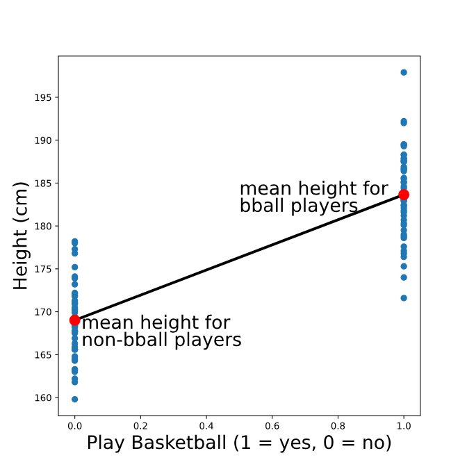

import pandas as pd
import numpy as np
import matplotlib.pyplot as plt
import statsmodels.api as smLinear regression is a powerful modeling technique that can be used to understand the relationship between a quantitative variable and one or more other variables, sometimes with the goal of making predictions. For example, linear regression can help us answer questions like:
- What is the relationship between apartment size and rental price for NYC apartments?
- Is a mother’s height a good predictor of their child’s adult height?
The first step before fitting a linear regression model is exploratory data analysis and data visualization: is there a relationship that we can model? For example let’s look at a fictional dataset from a group of students who were surveyed about their studying and breakfast choices prior to a math test.
Let’s visualise the relationship between hours studied and test score achieved by way of a scatter plot :
An estimated regression or line of best fit has been added to the graph:
predicted_score = 25 * students.hours_studied + 20which takes a baseline test score of 20 and then adds an additional 25 for every hour of study.
students = pd.read_csv('data/test_data.csv')students.head()| score | hours_studied | breakfast | |
|---|---|---|---|
| 0 | 73.5 | 2.7 | 0 |
| 1 | 92.2 | 4.1 | 1 |
| 2 | 55.4 | 2.5 | 0 |
| 3 | 64.6 | 1.6 | 1 |
| 4 | 66.9 | 1.4 | 0 |
# alternative attempt at modeling linear relationship
predicted_score = 25 * students.hours_studied + 20 #25 represents the slope or gradient, 20 represents the y intercept if x = 0
# Create the plot
plt.scatter(students.hours_studied, students.score)
plt.plot(students.hours_studied, predicted_score)
plt.show()This does not seem to approximate very well the relationship between hours studied and test score. The line appears to be too steep. Let’s see if we can improve this line so that it better fits the data. To start, let’s reduce the slope. We can do this by adjusting our slope variable :
# alternative attempt at modeling linear relationship
predicted_score = 10 * students.hours_studied + 20 # reduce the slope variable to 10
# Create the plot
plt.scatter(students.hours_studied, students.score)
plt.plot(students.hours_studied, predicted_score)
plt.show()The line now appears to be parallel to the points but still sits below them! Let’s leave the slope of the line equal to 10, as we are happy with this, but edit the y-intercept so that the line sits within the data :
# alternative attempt at modeling linear relationship
predicted_score = 10 * students.hours_studied + 45 # increase the y-intercept to 45
# Create the plot
plt.scatter(students.hours_studied, students.score)
plt.plot(students.hours_studied, predicted_score)
plt.show()Finding the “Best” Line
In the last exercise, we tried to eye-ball what the best-fit line might look like. In order to actually choose a line, we need to come up with some criteria for what “best” actually means.
Depending on our ultimate goals and data, we might choose different criteria; however, a common choice for linear regression is ordinary least squares (OLS). In simple OLS regression, we assume that the relationship between two variables x and y can be modeled as:
y= mx + b + errorWe define “best” as the line that minimizes the total squared error for all data points. This total squared error is called the loss function in machine learning. For example, consider the following plot:
n this plot, we see two points on either side of a line. One of the points is one unit below the line (labeled -1). The other point is three units above the line (labeled 3). The total squared error (loss) is:
loss=(−1)^2 + (3)^2 = 1 + 9 = 10Notice that we square each individual distance so that points below and above the line contribute equally to loss (when we square a negative number, the result is positive). To find the best-fit line, we need to find the slope and intercept of the line that minimizes loss.
Fitting a Linear Regression Model in Python
There are a number of Python libraries that can be used to fit a linear regression, but in this course, we will use the OLS.from_formula() function from statsmodels.api because it uses simple syntax and provides comprehensive model summaries.
Let’s leverage this library to revisit our students math test scores illustration :
model = sm.OLS.from_formula('score ~ hours_studied', students)results = model.fit()print(results.params)Intercept 43.016014
hours_studied 9.848111
dtype: float64# print the intercept coefficient
print(results.params[0])43.01601372546099# print the gradient coefficient
print(results.params[1])9.848111087298092So this tells us that the best-fit intercept is 43.016014 and the best-fit slope is 43.016014. Let’s plot this line onto our scatterplot and see what it looks like :
# 'best-fit' modeling linear relationship
predicted_score = results.params[1] * students.hours_studied + results.params[0]
# Create the plot
plt.scatter(students.hours_studied, students.score)
plt.plot(students.hours_studied, predicted_score)
plt.show()This does look like a pretty good fit!
Using a Regression Model for Prediction
Returning to our example let’s predict the score for a student who spent 3 hours studying :
pred_3hr = results.params[1] * 3 + results.params[0]
print(pred_3hr)72.56034698735526What is the predicted score for a student who spent 5 hours studying? Let’s use the .predict() method this time :
unseen_data = 5
# Calculate and print `pred_5hr` using the predict method:
pred_5hr = results.predict({'hours_studied': unseen_data})
print(pred_5hr)0 92.256569
dtype: float64Interpreting a Regression Model
Let’s again inspect the output for a regression that predicts weight based on height. The regression line looks something like this:
Note that the units of the intercept and slope of a regression line match the units of the original variables; the intercept of this line is measured in kg, and the slope is measured in kg/cm. To make sense of the intercept (which we calculated previously as -21.67 kg), let’s zoom out on this plot:
We see that the intercept is the predicted value of the outcome variable (weight) when the predictor variable (height) is equal to zero. In this case, the interpretation of the intercept is that a person who is 0 cm tall is expected to weigh -21 kg. This is pretty non-sensical because it’s impossible for someone to be 0 cm tall!
However, in other cases, this value does make sense and is useful to interpret. For example, if we were predicting ice cream sales based on temperature, the intercept would be the expected sales when the temperature is 0 degrees.
To visualize the slope, let’s zoom in on our plot:
Remember that slope can be thought of as rise/run — the ratio between the vertical and horizontal distances between any two points on the line. Therefore, the slope (which we previously calculated to be 0.50 kg/cm) is the expected difference in the outcome variable (weight) for a one unit difference in the predictor variable (height). In other words, we expect that a one centimeter difference in height is associated with 0.5 additional kilograms of weight.
Note that the slope gives us two pieces of information: the magnitude AND the direction of the relationship between the x and y variables. For example, suppose we had instead fit a regression of weight with minutes of exercise per day as a predictor — and calculated a slope of -.1. We would interpret this to mean that people who exercise for one additional minute per day are expected to weigh 0.1 kg LESS.
Assumptions of Linear Regression Part 1
There are a number of assumptions of simple linear regression, which are important to check if you are fitting a linear model. The first assumption is that the relationship between the outcome variable and predictor is linear (can be described by a line). We can check this before fitting the regression by simply looking at a plot of the two variables.
The next two assumptions (normality and homoscedasticity) are easier to check after fitting the regression. We will learn more about these assumptions in the following exercises, but first, we need to calculate two things: fitted values and residuals.
Again consider our regression model to predict weight based on height (model formula ‘weight ~ height’). The fitted values are the predicted weights for each person in the dataset that was used to fit the model, while the residuals are the differences between the predicted weight and the true weight for each person. Visually:
We can calculate the fitted values using .predict() by passing in the original data. The result is a pandas series containing predicted values for each person in the original dataset:
fitted_values = results.predict(body_measurements)
print(fitted_values.head())Output:
0 66.673077 1 59.100962 2 71.721154 3 70.711538 4 65.158654 dtype: float64
The residuals are the differences between each of these fitted values and the true values of the outcome variable. They can be calculated by subtracting the fitted values from the actual values. We can perform this element-wise subtraction in Python by simply subtracting one python series from the other, as shown below:
residuals = body_measurements.weight - fitted_values
print(residuals.head())Output:
0 -2.673077 1 -1.100962 2 3.278846 3 -3.711538 4 2.841346 dtype: float64
Let’s revisit our student scores model and calculate the fitted values:
fitted_values = results.predict(students)
print(fitted_values.head())0 69.605914
1 83.393269
2 67.636291
3 58.772991
4 56.803369
dtype: float64And now calculate the residuals :
residuals = students.score - fitted_values
print(residuals.head())0 3.894086
1 8.806731
2 -12.236291
3 5.827009
4 10.096631
dtype: float64Assumptions of Linear Regression Part 2
Once we’ve calculated the fitted values and residuals for a model, we can check the normality and homoscedasticity assumptions of linear regression.
Normality assumption
The normality assumption states that the residuals should be normally distributed. To check this assumption, we can inspect a histogram of the residuals and make sure that the distribution looks approximately normal (no skew or multiple “humps”):
plt.hist(residuals)
plt.show()These residuals appear normally distributed, leading us to conclude that the normality assumption is satisfied.
If the plot instead looked something like the distribution below (which is skewed right), we would be concerned that the normality assumption is not met:
Homoscedasticity assumption
Homoscedasticity is a fancy way of saying that the residuals have equal variation across all values of the predictor variable. A common way to check this is by plotting the residuals against the fitted values.
plt.scatter(fitted_values, residuals)
plt.show()If the homoscedasticity assumption is met, then this plot will look like a random splatter of points, centered around y=0 (as in the example above).
If there are any patterns or asymmetry, that would indicate the assumption is NOT met and linear regression may not be appropriate. For example:
Returning to our students example, let’s plot a histogram to check the Normality assumption :
plt.hist(residuals)
plt.show()These residuals appear normally distributed, leading us to conclude that the normality assumption is satisfied.
Let’s now check the Homoscedasticity assumption by way of a scatterplot :
plt.scatter(fitted_values, residuals)<matplotlib.collections.PathCollection at 0x7f6dd242ce20>As we can see above the scatterplot can be described as a random splatter of points, centered around y=0 and so the Homoscedasticity assumption is also validated.
Categorical Predictors
In the previous exercises, we used a quantitative predictor in our linear regression, but it’s important to note that we can also use categorical predictors. The simplest case of a categorical predictor is a binary variable (only two categories).
For example, suppose we surveyed 100 adults and asked them to report their height in cm and whether or not they play basketball. We’ve coded the variable bball_player so that it is equal to 1 if the person plays basketball and 0 if they do not. A plot of height vs. bball_player is below:
We see that people who play basketball tend to be taller than people who do not. Just like before, we can draw a line to fit these points. Take a moment to think about what that line might look like!
You might have guessed (correctly!) that the best fit line for this plot is the one that goes through the mean height for each group. To re-create the scatter plot with the best fit line, we could use the following code:
# Calculate group means
print(data.groupby('play_bball').mean().height) Output:
play_bball 0 169.016 1 183.644
# Create scatter plot
plt.scatter(data.play_bball, data.height)
# Add the line using calculated group means
plt.plot([0,1], [169.016, 183.644])
# Show the plot
plt.show()This will output the following plot (without the additional labels or colors):

Using our dataset students, let’s plot a scatter plot of score (y-axis) against breakfast (x-axis) to see scores for students who did and did not eat breakfast.
# Calculate group means
print(students.groupby('breakfast').mean().score)breakfast
0 61.664151
1 73.721277
Name: score, dtype: float64# Create the scatter plot here:
plt.scatter(students.breakfast, students.score)<matplotlib.collections.PathCollection at 0x7f6dd1e0b070># Create the scatter plot here:
plt.scatter(students.breakfast, students.score)
# Add the additional line here:
plt.plot([0,1], [61.664151, 73.721277])
# Show the plot
plt.show()Categorical Predictors: Fit and Interpretation
Now that we’ve seen what a regression model with a binary predictor looks like visually, we can actually fit the model using statsmodels.api.OLS.from_formula(), the same way we did for a quantitative predictor:
model = sm.OLS.from_formula('height ~ play_bball', data)
results = model.fit()
print(results.params)Output:
Intercept 169.016 play_bball 14.628 dtype: float64
Note that this will work if the play_bball variable is coded with 0s and 1s, but it will also work if it is coded with Trues and Falses, or even if it is coded with strings like ‘yes’ and ‘no’ (in this case, the coefficient label will look something like play_bball[T.yes] in the params output, indicating that ‘yes’ corresponds to a 1).
To interpret this output, we first need to remember that the intercept is the expected value of the outcome variable when the predictor is equal to zero. In this case, the intercept is therefore the mean height of non-basketball players.
The slope is the expected difference in the outcome variable for a one unit difference in the predictor variable. In this case, a one unit difference in play_bball is the difference between not being a basketball player and being a basketball player. Therefore, the slope is the difference in mean heights for basketball players and non-basketball players.
Create and fit a regression model of score predicted by breakfast
# Load libraries
import pandas as pd
import numpy as np
import matplotlib.pyplot as plt
import statsmodels.api as sm
# Read in the data
students = pd.read_csv('data/test_data.csv')# Calculate and print group means
mean_score_no_breakfast = np.mean(students.score[students.breakfast == 0])
print('Mean score (no breakfast): ', mean_score_no_breakfast)Mean score (no breakfast): 61.664150943396216mean_score_breakfast = np.mean(students.score[students.breakfast == 1])
print('Mean score (breakfast): ', mean_score_breakfast)Mean score (breakfast): 73.72127659574468# Fit the model and print the coefficients
model = sm.OLS.from_formula('score ~ breakfast', students)
results = model.fit()
print(results.params)Intercept 61.664151
breakfast 12.057126
dtype: float64# Calculate and print the difference in group means
diff_means = mean_score_breakfast - mean_score_no_breakfast
print(diff_means)12.057125652348468The difference in group means equates to the slope of the model.
Review
As a recap, we’ve learned to:
- Fit a simple OLS linear regression model
- Use both quantitative and binary categorical predictors
- Interpret the coefficients of a regression model
- Check the assumptions of a regression model
Worked Example
A new dataset named website contains simulated data for a sample of visitors to a website, including the amount of time in seconds they spent on the website (time_seconds), their age (age), and information about whether they accessed the website using Chrome or Safari (browser).
# Load libraries
import pandas as pd
import numpy as np
import matplotlib.pyplot as plt
import statsmodels.api as sm
# Read in the data
website = pd.read_csv('data/website.csv')
# Print the first five rows
print(website.head()) time_seconds age browser
0 486.0 47.1 Safari
1 645.7 64.6 Chrome
2 345.0 45.4 Safari
3 413.4 34.4 Chrome
4 426.4 31.3 Safari# Create a scatter plot of time vs age
plt.scatter(website.age, website.time_seconds)
plt.title('Scatterplot of age vs time spent on website')
plt.xlabel('age')
plt.ylabel('time - seconds')
# Show then clear plot
plt.show()
plt.clf()<Figure size 640x480 with 0 Axes># Fit a linear regression to predict time_seconds based on age
# Fit the model and print the coefficients
age_model = sm.OLS.from_formula('time_seconds ~ age', website)
results = age_model.fit()
print(results.params)Intercept 128.967945
age 6.913758
dtype: float64print(f'So the linear model predicts a baseline time spent on the website of {round(results.params[0],0)} seconds with an additional {round(results.params[1],0)} seconds for each year of age.') So the linear model predicts a baseline time spent on the website of 129.0 seconds with an additional 7.0 seconds for each year of age.# Plot the scatter plot with the line on top
plt.scatter(website.age, website.time_seconds)
#plt.plt(results.params[0], results.params[1])
plt.title('Scatterplot of age vs time spent on website')
plt.xlabel('age')
plt.ylabel('time - seconds')
# Show then clear plot
plt.show()
plt.clf()
<Figure size 640x480 with 0 Axes># 'best-fit' modeling linear relationship
predicted_time = results.params[1] * website.age + results.params[0]# Plot the scatter plot with the line on top
plt.scatter(website.age, website.time_seconds)
plt.plot(website.age, predicted_time)
plt.title('Scatterplot of age vs time spent on website')
plt.xlabel('age')
plt.ylabel('time - seconds')
# Show then clear plot
plt.show()
plt.clf()<Figure size 640x480 with 0 Axes># Calculate fitted values
fitted_values = results.predict(website)
print(fitted_values.head())0 454.605928
1 575.596686
2 442.852540
3 366.801206
4 345.368558
dtype: float64# Calculate residuals
residuals = website.time_seconds - fitted_values
print(residuals.head())0 31.394072
1 70.103314
2 -97.852540
3 46.598794
4 81.031442
dtype: float64# Check the normality assumption by plotting a histogram of the residuals.
residuals.hist()<AxesSubplot: >The normality assumption is validated as the residuals are approximately normally distributed.
# Check the homoscedasticity assumption by plotting the residuals against the fitted values
plt.scatter(residuals,fitted_values)
plt.title('Scatterplot of residuals vs fitted values - test of Homoscedasticity assumption')
plt.xlabel('residuals')
plt.ylabel('fitted values')
plt.show()
plt.clf()<Figure size 640x480 with 0 Axes>As we can see above the scatterplot can be described as a random splatter of points, centered around y=0 and so the Homoscedasticity assumption is also validated.
# predict the amount of time that a 40 year old person will spend on the website
unseen_data = 40
pred_40_year_old = results.predict({'age': unseen_data})
print(pred_40_year_old)0 405.518249
dtype: float64print(f'The predicted amount of time spent on the website by a {unseen_data} year old is approximately {round(pred_40_year_old[0]/60,2)} minutes.')The predicted amount of time spent on the website by a 40 year old is approximately 6.76 minutes.# Fit a linear regression to predict time_seconds based on browser
# Fit the model and print the coefficients
browser_model = sm.OLS.from_formula('time_seconds ~ browser', website)
results = browser_model.fit()
print(results.params)Intercept 489.704255
browser[T.Safari] -99.057086
dtype: float64print(f'This model predicts an average time spent on the website of {round(results.params[0]/60,2)} minutes. The mean time spent by visitors using a Safari browser is predicted to be {abs(round(results.params[1]/60,2))} minutes less than that of a visitor using a Chrome broswer.')This model predicts an average time spent on the website of 8.16 minutes. The mean time spent by visitors using a Safari browser is predicted to be 1.65 minutes less than that of a visitor using a Chrome broswer.# Calculate and print the group means (for comparison)
mean_time_safari = np.mean(website.time_seconds[website.browser == 'Safari'])
print('Mean time spent (Safari broswer): ', mean_time_safari)Mean time spent (Safari broswer): 390.64716981132074# Calculate and print the group means (for comparison)
mean_time_chrome = np.mean(website.time_seconds[website.browser == 'Chrome'])
print('Mean time spent (Chrome broswer): ', mean_time_chrome)Mean time spent (Chrome broswer): 489.70425531914884# Difference in time spent (means) between Chrome and Safari visitors
diff_time = mean_time_chrome - mean_time_safari
print(diff_time)99.0570855078281